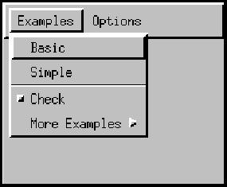
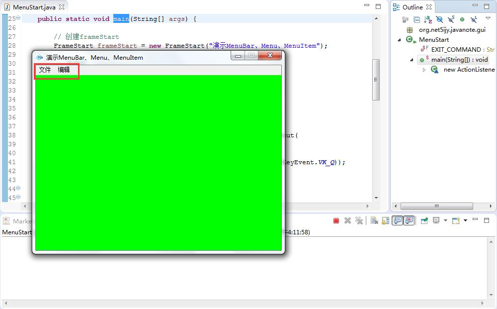

第五十节 Menu （菜单）
一、MenuBar （菜单栏）
java.awt;
public class MenuBar extends MenuComponent implements MenuContainer, Accessible {}
将菜单栏与 Frame 对象关联，可以调用 Frame 的 setMenuBar 方法。
下面是菜单栏的外观：

主要方法
public Menu add(Menu m) 将指定菜单添加到菜单栏 public Menu getMenu(int i) 获取指定菜单 public int getMenuCount() 获取菜单栏上的菜单数 public void remove(int index) 从菜单栏移除指定索引处的菜单 public void remove(MenuComponent m) 从菜单栏移除指定的菜单组件 public void setFont(Font f) 设置字体 public Font getFont() 获取菜单组件的字体
二、Menu （菜单）
java.awt;
public class Menu extends MenuItem implements MenuContainer, Accessible {}
菜单栏的下拉式菜单组件
菜单中的每一项都必须属于 MenuItem 类。可以是 MenuItem 的一个实例、子菜单（Menu 的一个实例）、或复选框（CheckboxMenuItem 的一个实例）
构造方法
public Menu(String label) throws HeadlessException
创建具有指定标签的新菜单
主要方法
public MenuItem add(MenuItem mi) 将指定的菜单项添加到此菜单 如果该菜单项为另一个菜单的一部分，则从该菜单移除它 public void addSeparator() 将一个分隔线或连字符添加到菜单的当前位置 public MenuItem getItem(int index) 获取菜单的指定索引处的菜单项 public int getItemCount() 获取菜单中菜单项的数数量 public void remove(int index) 从菜单移除指定索引处的菜单项 public void remove(MenuComponent item) 从菜单移除指定菜单项 public void removeAll() 从菜单移除所有菜单项
三、MenuItem （菜单项）
java.awt;
public class MenuItem extends MenuComponent implements Accessible {}
菜单中的所有项必须属于 MenuItem 类或其子类
默认的 MenuItem 对象包含一个简单的有标签的菜单项
此菜单栏的图像显示五个菜单项：
前两项是较简单的菜单项，有标签 Basic 和 imple
后面是一个分隔符
接下来是有 Check 标签的 CheckboxMenuItem 的实例
最后一个菜单项是有 More Examples 标签的子菜单，是 Menu 的一个实例
构造方法
public MenuItem(String label) throws HeadlessException
创建具有指定标签、没有键盘快捷方式的新菜单项
主要方法
public void addActionListener(ActionListener l) 添加指定动作侦听器，从此菜单项接收动作事件 public void removeActionListener(ActionListener l) 移除指定动作侦听器，不再从此菜单项中接收动作事件 public void setActionCommand(String command) 设置菜单项引发的动作事件的命令名 public void setEnabled(boolean b) 设置是否可以选择此菜单项 public void setLabel(String label) 设置标签
四、演示
/** * 演示菜单 * * 窗口使用的是演示Frame时编写的FrameStart类 * * 主要演示了MenuBar、Menu、MenuItem */ public class MenuStart { private static final String EXIT_COMMAND = "EXIT"; public static void main(String[] args) { // 创建frameStart FrameStart frameStart = new FrameStart("演示MenuBar、Menu、MenuItem"); // 菜单栏 MenuBar menuBar = new MenuBar(); // 创建文件菜单 Menu fileMenu = new Menu("文件", true); // 创建文件菜单下面的菜单项 MenuItem openFileMenu = new MenuItem("打开"); MenuItem saveFileMenu = new MenuItem("保存", new MenuShortcut( KeyEvent.VK_S, true)); // 为退出菜单添加String命令 MenuItem exitMenu = new MenuItem("退出", new MenuShortcut(KeyEvent.VK_Q)); exitMenu.setActionCommand(MenuStart.EXIT_COMMAND); // 为退出菜单项添加事件监听 exitMenu.addActionListener(new ActionListener() { @Override public void actionPerformed(ActionEvent e) { String command = e.getActionCommand(); // 判断事件源 if (MenuStart.EXIT_COMMAND.equals(command)) { // 程序退出 System.exit(0); } } }); // 填充文件菜单 fileMenu.add(openFileMenu); fileMenu.add(saveFileMenu); fileMenu.addSeparator();// 添加一个分隔线 fileMenu.add(exitMenu); // 把文件菜单填充到菜单栏 menuBar.add(fileMenu); // 创建编辑菜单 Menu editMenu = new Menu("编辑"); // 创建编辑菜单下面的菜单项 MenuItem viewMenu = new MenuItem("视图"); MenuItem copyMenu = new MenuItem("复制", new MenuShortcut(KeyEvent.VK_C)); MenuItem cutMenu = new MenuItem("剪切", new MenuShortcut(KeyEvent.VK_X)); MenuItem pasteMenu = new MenuItem("粘贴", new MenuShortcut(KeyEvent.VK_V)); // 填充编辑菜单 editMenu.add(viewMenu); editMenu.addSeparator(); editMenu.add(copyMenu); editMenu.add(cutMenu); editMenu.addSeparator(); editMenu.add(pasteMenu); // 把编辑菜单填充到菜单栏 menuBar.add(editMenu); // 为窗口设置菜单栏 frameStart.setMenuBar(menuBar); frameStart.validate(); } }
运行程序可以显示窗口

第四十九节 Panel （面板）
第五十一节 Button （按钮）、Label （标签）、Checkbox （复选框） 和 文本域组件
加入 QQ 群：5ijy网站开发交流
 ，获取更多源代码和开发环境配置信息。
，获取更多源代码和开发环境配置信息。